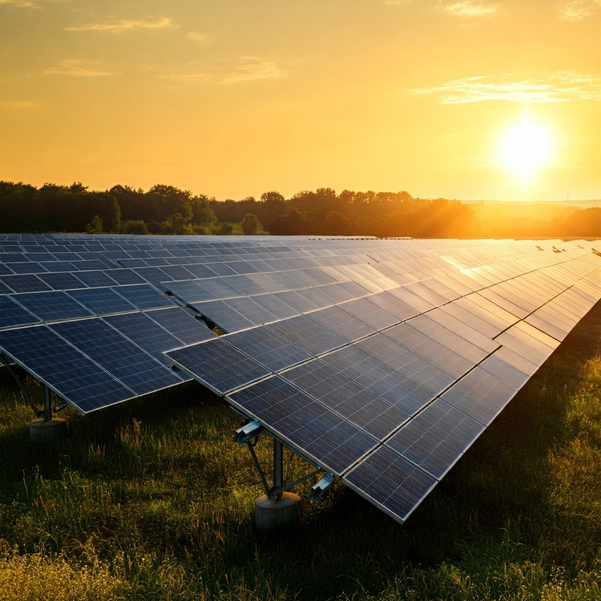
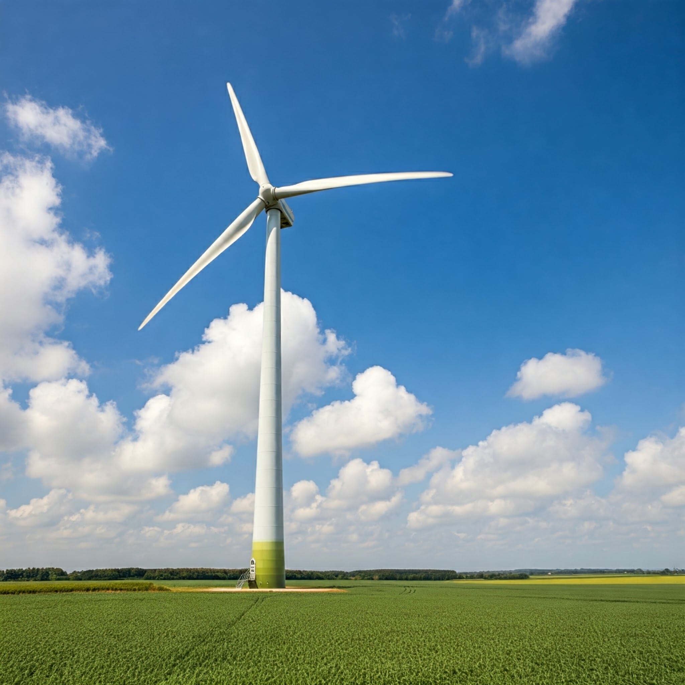
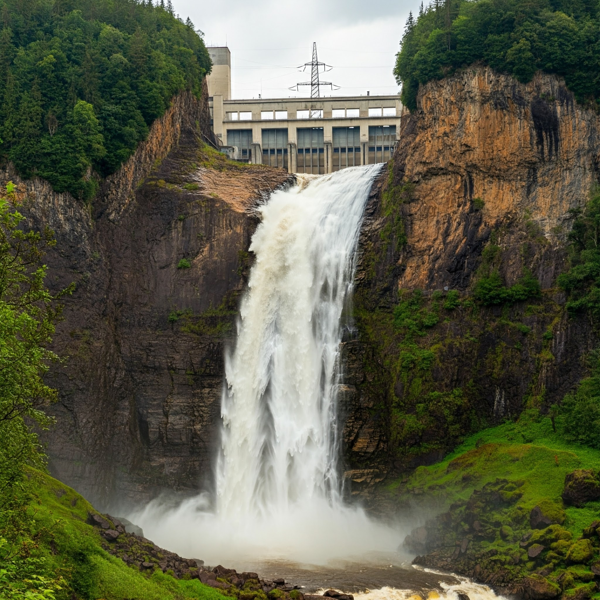
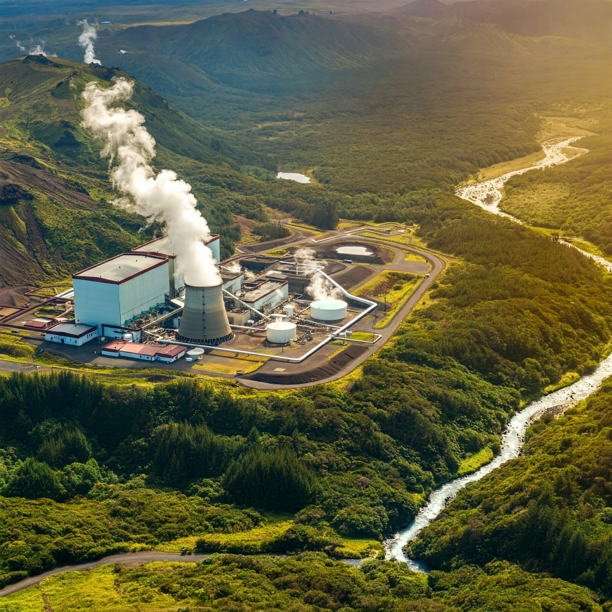
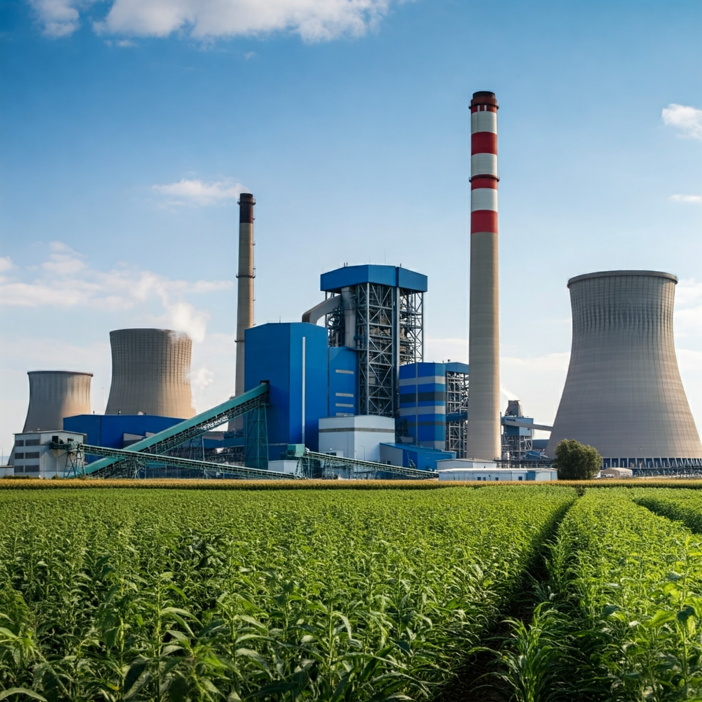

Solar Energy
Solar energy harnesses the power of the sun to generate electricity through the use of solar panels. Solar panels, also known as photovoltaic (PV) cells, convert sunlight directly into electricity. This clean energy source can be used to power homes, businesses, and communities.
Learn more about solar energy: Solar Energy Industries Association (SEIA)
Wind Energy
Wind energy captures the kinetic energy of wind through wind turbines. Wind turbines are tall structures with blades that rotate when the wind blows, generating electricity. Wind energy is a clean and abundant energy source that can be harnessed both onshore and offshore.
Learn more about wind energy: American Wind Energy Association (AWEA)
Hydro Energy
Hydro energy, also known as hydropower, utilizes the power of water to generate electricity. Hydropower plants typically use dams to create reservoirs of water. The water is then released from the reservoir and flows through turbines, generating electricity. Hydro energy is a clean and reliable energy source that can provide a consistent power supply.
Learn more about hydro energy: National Hydropower Association (NHA)
Geothermal Energy
Geothermal energy harnesses the heat from within the Earth's core. Geothermal power plants tap into underground reservoirs of steam or hot water. This steam or hot water is used to drive turbines, generating electricity. Geothermal energy is a sustainable energy source that can provide a consistent power supply.
Learn more about geothermal energy: U.S. Department of Energy - Geothermal Technologies Office
Biomass Energy
Biomass energy utilizes organic matter, such as wood, crops, and agricultural waste. Biomass can be burned directly to generate heat or electricity, or it can be converted into biofuels. Biomass energy is a sustainable energy source that can help reduce waste and provide a reliable power supply.
Learn more about biomass energy: U.S. Energy Information Administration (EIA)